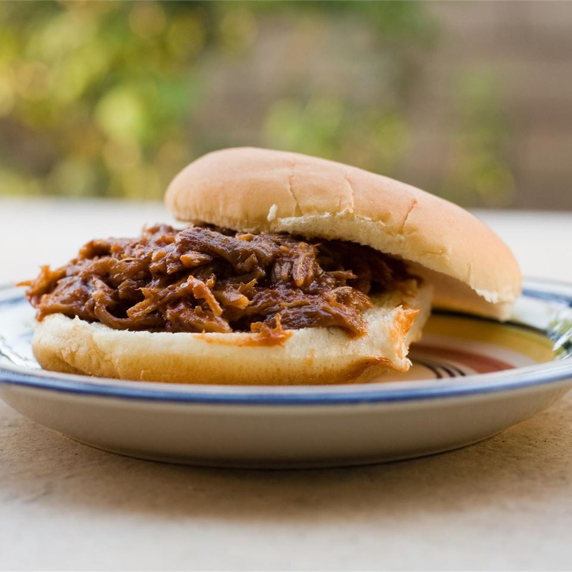

Southern Pulled Pork

Description
A tasty recipe for pulled pork. from
allrecipes.com
Ingredients
- 1 tablespoon butter
- 2 pounds boneless pork roast
- 1 tablespoon Cajun seasoning
- 1 medium onion, chopped
- 4 cloves garlic, crushed
- 4 cups water
- 1 tablespoon liquid smoke flavoring
Directions
- Cut the pork roast into large chunks. Season generously with the
Cajun seasoning. Melt butter in a large skillet over medium-high heat.
Add pork, and brown on all sides. Remove from the skillet, and transfer
to a slow cooker.
- Add the onion and garlic to the skillet, and cook for a few minutes
until tender. Stir in the water scraping the bottom to include all of
the browned pork bits from the bottom of the pan, then pour the whole
mixture into the slow cooker with the pork. Stir in liquid smoke
flavoring.
- Cover, and cook on High for 6 hours, or until meat is falling apart when
pierced with a fork. Remove pieces of pork from the slow cooker, and shred.
Return to the slow cooker to keep warm while serving.